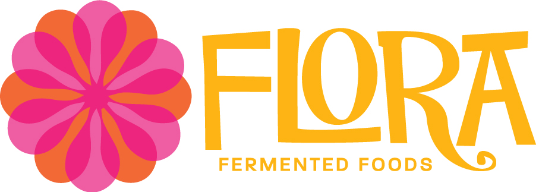

Flora Fermented Foods
Case Study
Overview
Flora Fermented Founds was founded in Grand Rapids, Michigan. Their products are organic, locally sourced, and vegan. One of the representatives requested that we put a jellyfish on the label and to make the label blue. She felt that the jellyfish was reminiscent of the SCOBY. Ultimately the project veered away from those initial inclinations.
First Iteration of Jellyfish Inspired Labels
Second Iteration of Labels
The client decided to nix the jellyfish and blue. Agreed to 1970s inspired with earthy but bright color palette.
Third Iteration of Labels
The client decided to go with the overlapping asterisk. We then needed to decide on a font. I researched 1970s business design and tried to find fonts that were similar.
The client ultimately decided to stick with the Cherubim font and appreciated the yellow color of the main label
Final Logo Design
This is the final logo design.
Social Media, Business Cards, Banners
mini profile pic
facebook icon
email icon
Facebook Banner

Front of Business Card
Back of Business Card
Product Labels
chocolate chai kombucha
apple plum kombucha
ginger lime kombucha
chaider kombucha
sushi
kimchi
tempeh
Flora Bar
amazake front
amazake back
In Action